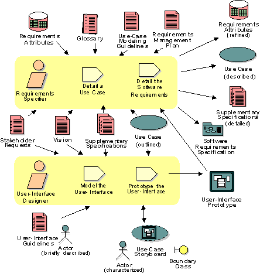

Disciplines >
Disciplines >
 Requirements >
Requirements >
 Workflow >
Refine the System Definition
Workflow >
Refine the System Definition
Disciplines >
Requirements >
Workflow >
Refine the System Definition
Workflow Detail:
|
Topics |
 |
The purpose of this workflow detail is to further refine the requirements in order to:
Refining the System definition begins with detailing the outlined use cases, at least briefly describing the actors, and furthering the understanding of project scope reflected in the set of re-prioritized features in the Vision that is believed to be achievable by fairly firm budgets and dates.
The output of this workflow detail is a more in-depth understanding of system functionality expressed in detailed use cases, revised and detailed Supplementary Specifications, as well as user-interface elements. A formal Software Requirements Specification may be developed, if needed, in addition to the detailed use cases and Supplementary Specifications.
It is important to work closely with users and potential users of the system when Modeling and Prototyping the user-interface. This may be used address usability of the system, to help uncover any previously undiscovered requirements and to further refine the requirements definition.
Regular reviews, along with updates to the attributes and dependencies, should be done, as shown in the Manage Changing Requirements workflow detail, whenever the requirements specifications are updated.
Requirements specifiers should be skilled in expressing themselves in writing, and also have a good understanding of the problem domain. It is often wise to include in your group of requirements specifiers people who later on will act as designers and testers.
Especially in larger projects, user-interface designers are often a separate group of people, focused only on usability of the system and the user interface.
Requirements specifiers and user-interface
designers should work together closely to define detailed requirements
of the system. Although much of the work is done individually, frequent walkthroughs
should be performed to ensure the team is in sync.
|
Rational Unified
Process
|